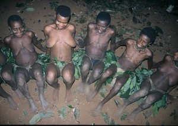
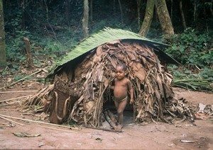
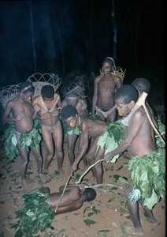
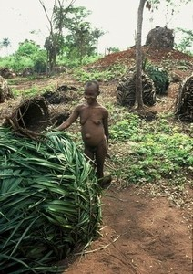
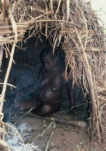

Photogallery


Pygmies – the dwarves of the forest

Photo©Petr Jahoda
Pygmies are the world's best-known nationality of dwarfs. At the same time, they are also one of the most primitive types. They are hunters and gatherers, which means that they don't grow anything. Pygmies live in primitive huts made of leaves and sticks. They don't know what war is, and they don't even have a word for any type of thing like that. When there is a disagreement, both sides give in. Hygiene is an unknown word as well. Despite all that, Pigmies are great singers and musicians. They are born with absolute pitch.
The Central African Republic is the last home of „primitive“ Pygmies. Once or twice a week only one single plane flies there, from one single country: France. This African republic has no other connection to the world. This is hard to imagine these days. It may seem as puzzlingly obscure as Pygmies, the slaves of Bantus, do.
The Expedition Plan
The Pygmies, the forest elephants and the lowland gorillas
Term of the expedition: 10th Jan – 26th Jan. 2014
17 or 23 days (medium difficulty) = The Pygmies – 2 weeks + 1 week in Cameroon (optional) – slightly problematic, but possible to arrange. As well there is a chance to see the wild lowland gorillas and the forest elephants in the national park Dzanga (optional). The extended expedition including the optional trips – if required – must be agreed before starting the visa arrangement process and the flight tickets booking.
The expedition to THE HALF-NAKED INHABITANS IN THE RAIN FOREST OF THE EQUATORIAL AFRICA. This is already the third time we organize such a very complicated trip! The average height of the adult Pygmy man is between 130 and 150 cm. Most of the time will be spent in the WILDEST AFRICAN JUNGLE on the border of The Central African Republic and Kongo. The FOREST ELEPHANTS, peaceful Pygmies and dangerous LOWLAND GORILLAS. The level of difficulty for our clients is „only“ medium in this case, however it is extremely difficult for us to organize it.
To our knowledge our travel agency is the only one worldwide organizing every 2–5 years the expeditions to the Pygmies living in the Central Africa, to the lowland gorillas and forest elephants? The reason is that the Central African Republic is logistically one of the most complicated destinations in the world. There are almost no tourists coming into this country, there is no infrastructure, no public transport and even an entire lack of any means of transport and fuel.
The actual preparation of such trip is also time consuming. It's necessary to take into consideration that the visa procedure will take at least 3 months! With regards to this it is necessary to close up the expedition team 4 MONTHS before the departure at the latest. For this reason the deadline for sign up on this trip is on 10th September 2010. The visas are arranged by professionals, it is more expensive, but surer way.
The expedition can be arranged for 3–7 participants only. We will make the trip even for the minimal number of participants.
Price: on request.
The price includes: Accommodation in the small medium class hotels, (we will sleep in our own tents during the trek), all transport needed on place, English speaking guide with a good knowledge of the environment and French language (the expedition will be led by Petr the leader of all Pygmies expeditions Jahoda – www.jahodapetr.cz and www.PapuaTrekking.com;). Local guide, when required. Info materials.
The price does not include: flight tickets from Europe to the Central African Republic + taxes, optional 1 week extension and trips to gorillas, elephants and Cameroon (approx. USD 3.800), additional fees for attractions, photography, filming, insurance, carriers, food.
More about Pygmies
The most well known area where Pygmies reside is Ituri, which is situated in Congo. This area is very dangerous these days, and it is rumored that Congo soldiers have begun to hunt Pygmies for meat. That is to say that the inhabitants of countries in which Pygmies live have not yet acknowledged Pygmies as humans. They see Pygmies as animals or half-animals; and therefore, the Congo soldiers can hunt them and eat them with impunity.

Photo©Petr Jahoda
Other areas where you can meet Pygmies are Cameroon and Congo near the Uganda border. The Pygmies living there are already civilized and are regrettably addicted to drinking.
Our expeditions to Pygmies are directed to Central African Republic. It is the one and probably only place on the world where you can see Pygmies who are still mostly untouched by civilization. Small scientific expeditions have been heading into this area for years. The „slave state“ is still in place there. According to ancient tradition, every Pygmy village has its owner who comes from the ranks of big black Bantus. Pygmies are their property, and the dwarf tribesmen are not considered to be humans there either.
As far as we know, we are the only travel agency in the world organizing commercial expeditions to Pygmies. At the same time, we are also the only ones who organize expeditions to Central African Republic. As far as we know, there is one American agency that organizes trips to Pygmies. They go from Cameroon to NP Sanga Dzanga, and in three days they return to Cameroon. Unfortunately, the Pygmies around NP Sanga Dzanga are as civilized and degraded by alcohol as Pygmies in Cameroon are. As far as we know, we are also the only travel agency to organize commercial expeditions to Pygmies that live in the forest, and Pygmies living on the Congo border. At the same time, we are the only one whose expeditions travel across the entire Central African Republic.

Photo©Petr Jahoda

Photo©Petr Jahoda

Photo©Petr Jahoda
Unfortunately, we can't estimate how long the Pygmies will be preserved as an uncivilized native tribe. They are being put under considerable pressure in modern times. Bantus have begun to hunt in their forest with modern weapons. We don't know how long the forest will provide enough food for Pygmies under these circumstances. Pygmies make a living from hunting and gathering. They are excellent hunters. Actually, Pygmies are widely recognized as the best elephant hunters. Although they are one of the most primitive cultures, yet they use sophisticated traps and flawless hunting tactics. Though this may be true, when it comes to the excessive hunting of the Bantu tribe using modern weapons, they are helpless.
What's good to know at the beginning
Dear Friends
You've chosen one of our most interesting expeditions. The Pygmies living in the Central African Republic are the „piece de résistance“. They are one of the most interesting ethnics worldwide. The trip to the Pygmies is unforgettable and although I went through it several times already, it still brings me new experiences. There are still many things to discover, many occasions for taking pictures and filming. The Pygmies are incredibly friendly and pure, to meet them is the well deserved pinnacle of the whole trek. They have a great talent for music, people say that all of them have an absolute ear for music. During my last trip to them I recorder 70 (!!!) songs. It's something fabulous and gorgeous. As confirmed to me by Mr Hanzelka (one of the most famous Czech travelers), they are maybe the most primitive people living on our planet.
You've decided for an expedition to the most interesting, but at the same time the most problematic area, where we go. The Central African Republic is a country shaken by extensive political instability and famous by unusual corruption. For us it means that before we reach the forest, we will often be bothered by police and asked to give presents for nothing. As well our walking will be subject to unusual rules. There is a desperate lack of any off-road vehicles in the Central African Republic, they're extremely expensive and it's very hard to get any? However we're not dependent on this, we know also other ways how to get to the Pygmies. Until recently only one plane flew to this country per week. Now there're two flights weekly? This all won't touch you indeed, I'll be there to solve such troubles. But this is why we try to get into the forest as soon as possible and stay there as long as possible. In fact this is what we all want, this is the reason we go to the Central African Republic – to spend most of the time with the Pygmies. The moments I spent with the Pygmies in the central African forest are the most valuable ones in my life and it richly outweighed all hardships of this journey. The level of difficulty is medium for this trek, it's not necessary to be afraid, however it cannot be underestimated. The daily transit doesn't usually exceed 6 hours, exceptionally it can be 6–8 hours. We won't trek too much though, just about 2–3 days in the forest on the way to the Pygmies and 2 days for the return. We try to spend as much time as possible with the people we came to see. For this reason we'll spend few nights in the villages, so we'll have enough time to absorb the unique moments with the Pygmies and enjoy the long evenings with dancing and singing. There is no reason to be afraid of this trip. Even women joined us on this expedition before. They must put an extra effort, but they're able to manage it well. They definitely didn't hold the group in any respect. It is not a race in the forest, the reason we go there is to enjoy the trip and have great some experiences. This is not possible, if we are in a hurry.
Předchozí stránka: Home
Následující stránka: Expeditions